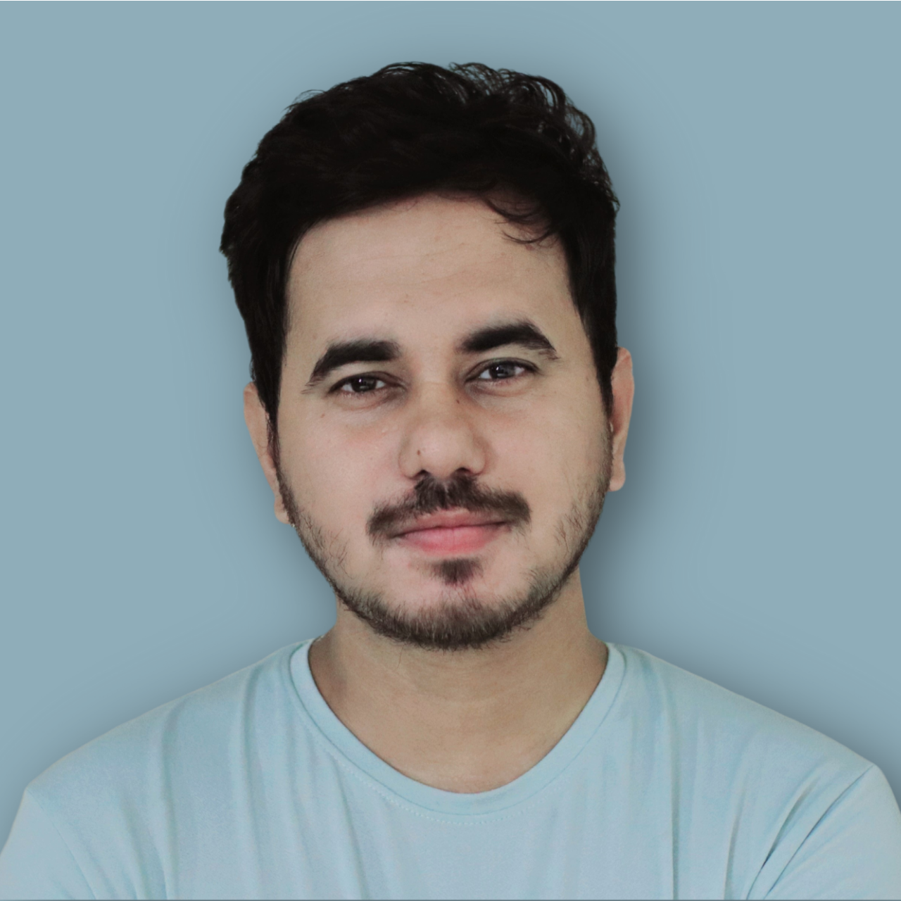

Durjoy Mistry
Lecturer, Department of CSE
Objective
A passionate and driven researcher, expert in machine learning, deep learning, federated learning, NLP, generative AI, and quantum machine learning, with strong coding skills in Python and other tools, eager to leverage my passion for innovation to deliver meaningful value to the world of computer science.
Research
- Interests: Machine Learning, Deep Learning, Federated Learning, Generative AI, Quantum Computing, Blockchain, Computer Vision
- 17+ peer-reviewed publications · 165+ citations Learn more →
- Supervision of 13+ research debutants Learn more →
- Active in AI research lab initiatives and academic process automation
Education
Master in Computer Science and Engineering
Passing Year: December, 2025
University of Asia Pacific
- CGPA: 4.00 | Batch Rank #01
- Thesis: "Secure Federated Learning for Sign Language Detection: Addressing Model Inversion Vulnerabilities with Differential Privacy"
B.Sc. in Computer Science and Engineering
Passing Year: December, 2021
University of Asia Pacific
- CGPA: 3.88 | Batch Rank #02
- Thesis: "Hate Speech Detection in Social Media Comments using BERT"
Secondary and Higher Secondary Education
Barisal Education Board
- SSC (Science), 2013 — GPA 5.00
- HSC (Science), 2015 — GPA 5.00
Experience
2023 – Present
Lecturer, Department of CSE
- Teaching advanced courses in Machine Learning and AI
- Supervising undergraduate research projects
- Leading the AI Research Lab initiatives
- Convener: Software and Hardware Club, Dept. of CSE
- Courses Conducted:
- CSE 102: Introduction to Computer Programming Lab
- CSE 104: Structured Programming Lab
- CSE 108: Competitive Programming
- CSE 304: Data Communication Lab
- CSE 306: System Analysis & Design Lab
- CSE 302: Object Oriented Programming II Lab
- CSE 301: Object Oriented Programming II
2022 – Present
Lead Researcher
- Lead research in Federated Learning and Generative AI
- Supervising junior researchers and guiding publications
- Collaborating on international projects and grants
Awards
Vice Chancellor's Award (GPA 3.90+)
- Fall 2018, Spring 2020, Fall 2019, Fall 2020, Spring 2021, 2021 — University of Asia Pacific
Dean's Award (GPA 3.75+)
- Fall 2017, Spring 2019 — University of Asia Pacific
Contest & Other Recognitions
- 2020 — Inside CSE, Film And Photography Club, UAP (Watch)
- Bronze Award — International Blockchain Olympiad, project Trusted Traceability Service
- Emerging Leader 2024 Award
Skills
Programming
- Python
- TensorFlow & PyTorch
- Java · C · C++
- JavaScript · HTML · CSS
- Django (Expert)
Machine Learning
- Deep Learning
- Federated Learning
- Computer Vision & NLP
- Quantum ML
- Generative AI
- Blockchain
Tools
- Git & GitHub
- AWS
- Linux
References
Dr. Aloke Kumar Saha
Professor, Dept. of CSE, UAP
Dr. Firoz Mridha
Professor, AIUB · Director, AMIR Lab
Role: Research Mentor
Email: firoz.mridha@aiub.edu
Highlights: World's Top 2% Scientists, 5000+ Citations
Available for: Academic & Professional References
Email: firoz.mridha@aiub.edu
Highlights: World's Top 2% Scientists, 5000+ Citations
Available for: Academic & Professional References